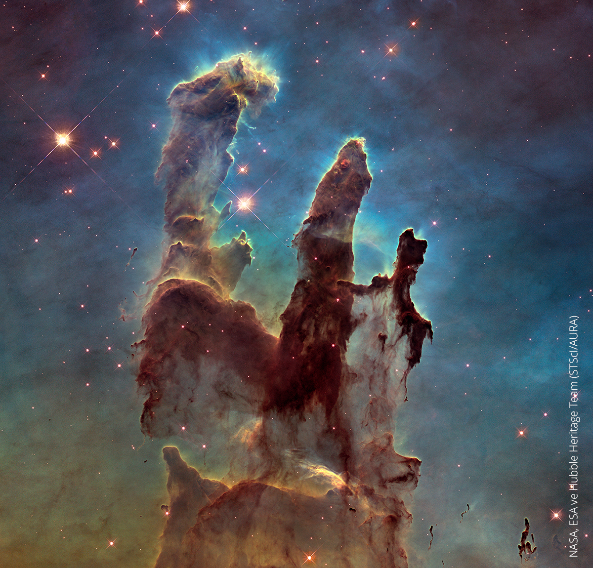

Bulutsular

Bulutsu, yıldızlararası ortamda bulunan astronomik ölçekte çok büyük alana yayılmış kozmik gaz ve tozdan oluşan yapılardır. Latince nebula (sis) isminden türemiştir. Bulutsular, yıldızların doğum yerleri veya bir yıldızın öldükten sonra ardında bıraktığı yapılardır. Bulutsuların içinde bulunan yıldızlar bazen bulutsuların değişik renklerde parlamasına neden olurlar. Farklı renkler, nebula içindeki farklı unsurlar sebebiyle oluşur. İçerik de bu unsurlardan biridir. Aslında içerikleri evrende bulunan element oranıyla paralellik gösterir. Bu elementler %75 oranda hidrojen, %24 helyum ve çok az oranda karbon, nitrojen, oksijen, neon, magnezyum, silikon, demir gibi ağır elementlerdir.
Şimdi gelin sizinle birlikte Kartal Bulutsusu’nu yapalım.
Kartal Bulutsusunun merkezi yakınında yükselen ve fil hortumları veya Yaratılış Sütunları olarak tanımlanan yoğun, tozlu sütunlar ışık yılları uzunluğundadır; ancak yıldızları oluşturmak üzere kütleçekimsel olarak büzülmektedir.